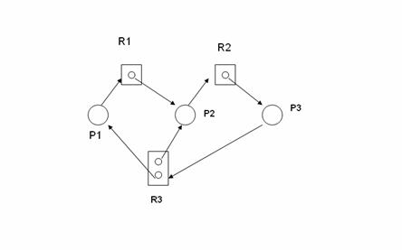

Deadlocks
Lecture-20
Operating Systems (CS330)
Lecturer: Deepak Gupta
Notes prepared by: Abhimanyu Singh Sehkhawat
Lecture Date: September 16, 2004
Lecture Contents:
- Deadlocks
- System Model
- Necessary Conditions for a Deadlock
- Resource Allocation Graph
- Approaches for Handling Deadlocks
- Deadlock Prevention
- The Dining Philosophers Problem
Deadlocks
A set of processes is said to be deadlocked if each of the processes
in the set is waiting for an event that
can only be caused by some other process in the set. The event might be
the release of a lock or some other exclusively used resource, signaling of
a condition variable, receipt of a message etc. It is easy to see that when a
set of processes is deadlocked, all the processes in the set will keep
waiting for ever. In this and the next lecture, we shall characterize
deadlocks, and study approaches for dealing with deadlocks.
As an example consider two processes P1 and P2 both of which try acquiring
locks L1 and L2 one after another but in different orders. That is, P1
attempts to lock L1, and then L2, and P2 attempts to lock L2, and then L1.
In a particular execution, it is possible that P1 is able to lock L1 but
before it locks L2, P2 locks L2. Now P1 is waiting for P2 to release L2
and P2 is waiting for P1 to release L1, and the two processes are deadlocked.
Note that in such a program, it is not necessary that a deadlock will
occur in every execution, but it may occur in some executions.
System Model
We shall study deadlocks that are caused due to shared resources.
Resources may be physical resources such as printer etc., or logical
resources such as locks etc.
Here, the events of interest are releasing of resources by various
processes. Note that deadlocks may occur in other contexts as well,
where there are no shared resources. We shall however restrict our
attention to deadlocks caused by shared resources, since these are
the simplest to model.
For generality, we assume that the set of resources is divided into
resource types. Each resource type has some (fixed) number of
identical resources (or resource instances). This means that if a
process requests a resource of a certain type, it can be allocated
any instance of that resource type (since the instances of
a resource type are all identical).
We assume that a process must request a resource before using it.
If the request is not immediately available, the requesting process
needs to wait. We further assume that a process may request multiple
resources in a single request. These resources are assigned to the
process (and the process unblocks) only when all of the
requested resources are available.
Necessary Conditions for a Deadlock
It can be seen that all of the following conditions are necessary
for a deadlock to occur.
- Mutual exclusion
- There is at least one resource that can only be used mutually exclusively,
i.e., it cannot be used simultaneously by more than one process.
- No Preemption
- A process cannot be forced to give up a resource that it is holding.
- Hold and Wait
- There must be at least one process that is holding some resources and is
waiting for some more.
- Circular Wait
- There is a set of processes P1, P2, ..., Pn, that are waiting for resources
held by one another in a circular fashion. That is, P1 is waiting for
some resource held by P2, P2 is waiting for some resource held by P3, etc., and
finally, Pn is waiting for some resource held by P1.
Note that the circular wait condition implies the hold and wait
condition but, as we will see later, it is helpful to consider these
conditions separately. Also note that these conditions are necessary
but not necessarily sufficient for a deadlock.
Resource Allocation Graph (RAG)
A deadlock is a property of the current system state. By state, we mean
the information about resource allocation and requests. This state can be
succintly captured pictorially by a Resource Allocation Graph.
In the resource allocation graph, the vertices are processes (shown by
circles) and resource type (shown by rectangles). A resource type vertex
contains dots, one for each instance of the resource type.
The graph contains a (directed) edge from a process to a resource
(a request edge)
if the process is waiting for an instance of the resource. An edge
from an resource type (starting from a specific dot within the resource
type vertex) to a process (an assignment edge) indicates that the particular
instance of the resource is currently allocated to this process.
As an example, consider the resource allocation graph shown in
the figure below. Observe that this graph represents a deadlocked
state. Note that if any of the request edges were to be removed
from this graph, the processes would no longer be deadlocked.
The presence of a cycle in the RAG is necessary for a deadlock
to exist (circular wait condition). However, even if all the
necessary conditions for a deadlock hold, the state may still
not be deadlocked. Try to come up with an example of an RAG
which has a cycle but does not represent a deadlocked state.

An example of a resource allocation graph (representing a deadlocked state)
Approaches for Handling Deadlocks
There are three primary approaches for handling deadlocks:
- Deadlock Prevention
- Here the programmer uses some strategy that results in a provably
deadlock-free program.
- Deadlock Avoidance
- Here, the runtime system that allocates resources keeps track of
the system state at runtime and ensures that the system never gets into
a deadlocked state.
- Deadlock Detection
- Here deadlocks may occur, but the system regularly attempts to detect
existing deadlocks and tries to recover from them.
We shall examine the three approaches in turn. We first look at
strategies for deadlock prevention. Deadlock avoidance and detection
will be discussed in the next lecture.
Deadlock Prevention
The essential idea here is that the programmer enforces some policy
(in his program) for resource usage that ensures that at least one of
the conditions necessary for a deadlock never holds. Let us examine
each of the necessary conditions for a deadlock and consider how one
can prevent each of these from holding.
- Mutual Exclusion
- If we want to prevent the mutual exclusion condition from holding,
we must allow all resources to be used in a shared mode. However,
many resources are intrinsically non-shareable (such as a mutex or lock).
This approach is there not feasible in general.
- No Preemption
- To prevent the no preemption condition from holding, we must be able
to force processes to give up resources that they are holding. This may be
feasible for resources whose state can saved and restored (for example,
the CPU). However, this is not possible for all resource types. Consider,
for instance, what may happen is a process is forced to give up a lock!
- Hold and Wait
- To prevent the hold and wait condition from ever holding, the following
approaches can be used.
-
A process must ask for all resources that it may need in a single request.
-
A process must relinquish all previously held resources before requesting
more resources.
Using this approach may also lead to poor resource utilization.
Whether or not it is possible to use one of these approaches depends on the
application. We shall see an example for the former approach soon.
- Circular Wait
- Depending on the application, many different approaches may be possible
for preventing the circular wait condition from holding. Here is a general
approach. Order resource types, i.e., assign a unique number to each resource
type. Now use the discipline that once a process holds a resource type i
it can only request another resource type j if i > i.
It is left as a simple exercise to show that this policy will prevent the
circular wait condition from ever holding.
The Dining Philosophers Problem
The Dining Philosophers Problem is a classical synchronization problem that we
shall use to illustrate various deadlock prevention strategies. In this
problem, there are n philosophers who spend their lives thinking and
eating. The philosophers sit around a circular table. There is a bowl of
spaghetti in front of every philosopher. Every pair of philosophers
has a fork placed between the two. A philosopher needs both forks
to eat spaghetti, and obviously a fork can only be used by one
philosopher at a time. When a philosopher is hungry, he needs to pick up both
forks. Having done this, he eats for some time and then puts down both
the forks, and starts thinking for some time after which he gets hungry
again. The problem is to write a program to synchronize the actions of the
philosophers. The scenario is illustrated by the figure below.

The Dining Philosophers
A naive solution to this problem would be to associate a mutex fork[i]
with the ith fork, and have each philosopher execute the
following code for eating.
lock(fork[i]);
lock(fork[i+1]%n);
Eat;
unlock(fork[i]);
unlock(fork[i+1]%n);
This solution corresponds to each philosopher first picking the left and
then the right fork before starting to eat.
Observe that with this solution, the following scenario is possible. Each
philosopher picks up the fork on his left and wait for the one on his right.
This is a classical deadlock.
Here are some deadlock prevention schemes for the above problem.
You are encouraged to think about the implementation of each of these
solutions in terms of the familiar synchronization constructs.
-
Allow at most n-1 philosophers to sit at the table simultaneously.
(Circular wait cannot occur.)
-
A philosopher should pick up both forks simultaneously only if both
are available. (Hold and wait cannot occur).
-
Break symmetry: even numbered philosophers pick up their left forks first,
and the odd numbered ones pick up their right forks first. (Circular wait
cannot occur).
-
Order resources: Each philosopher must pick up the lesser numbered of the
two forks that he needs first. (Circular wait cannot occur).